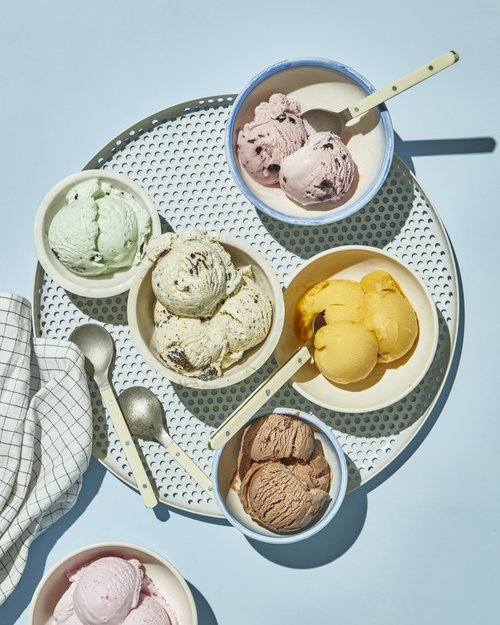

Icecreams

Description
- Ice cream is a sweetened frozen food typically eaten as a snack or dessert.
- It may be made from milk or cream and is flavoured with a sweetener, either sugar or an alternative, and a spice, such as cocoa or vanilla, or with fruit such as strawberries or peaches.
- Ice cream had its origins in Europe and was introduced later in the United States where it developed into an industry.
- Image result for a short description on ice cream.Ice cream is one of the most commonly loved desserts on this planet. It has a creamy, sweet taste that many people love. Ice cream is delicious and famous, and it is made from dairy products such as milk and cream, eggs, sugar and sorbet powder
Ingredients
- 1 (14 ounce) can sweetened condensed milk.
- ½ cup cold milk.
- 1 tablespoon vanilla extract.
- ⅛ teaspoon salt.
- 1 pint heavy cream.
Steps
- Stir together condensed milk, cold milk, vanilla, and salt in a medium bowl. Set aside.
- Beat heavy cream in a large bowl with an electric mixer until stiff peaks form. Fold milk mixture into whipped cream.
- Pour into a shallow 2-quart dish, cover, and freeze for 4 hours, stirring once after 2 hours or when edges start to harden.
- Serve or store in an airtight container for up to 10 days.
- Finally,have it. :)